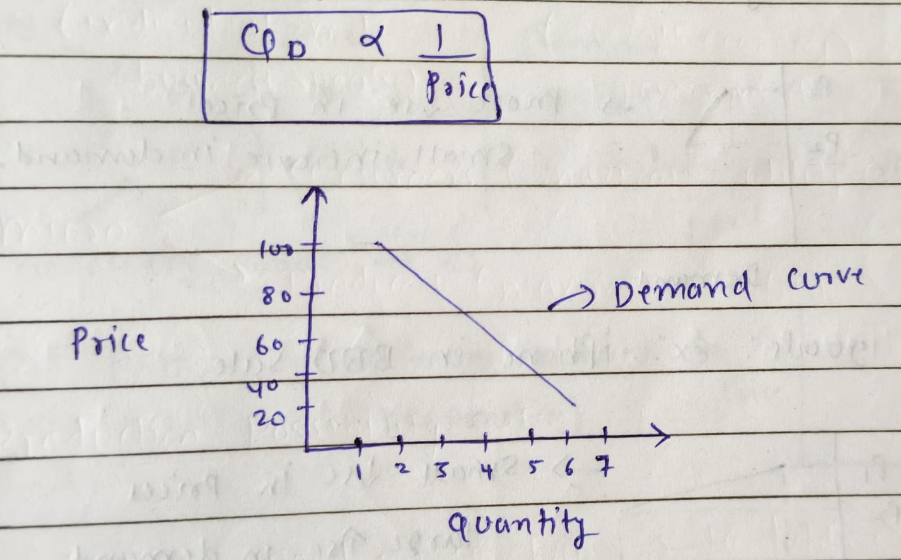
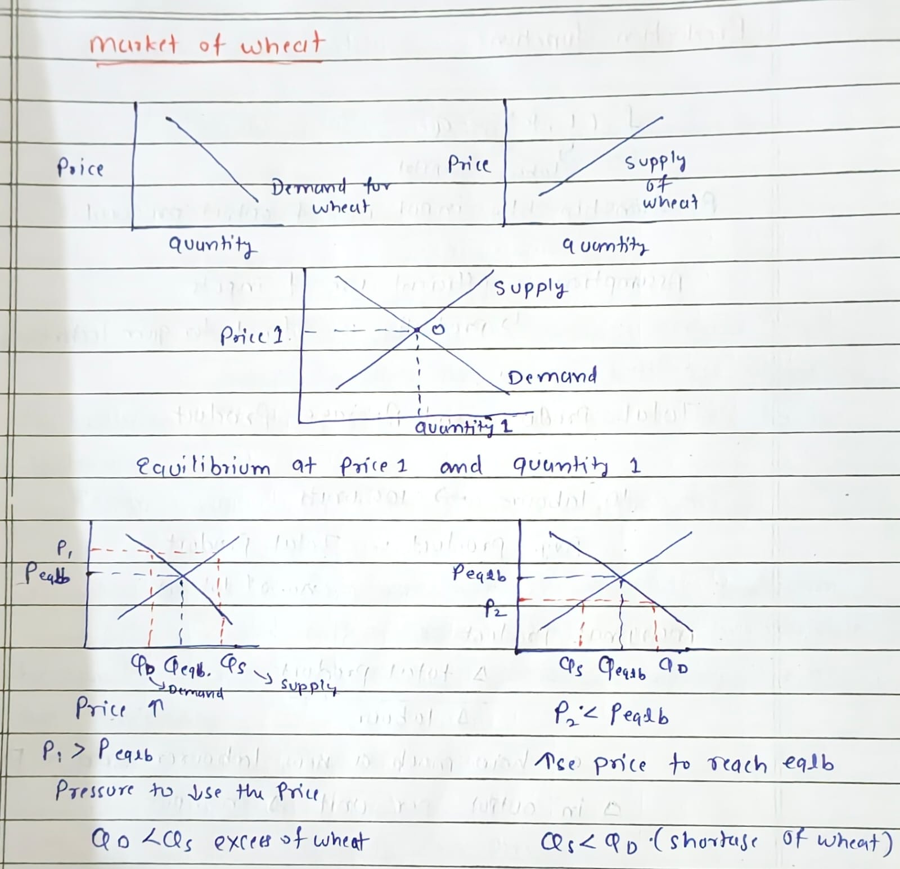

Basic Economic Problem
- Limited Resources ↔ Infinite Wants
- This creates conflict
Economics is the allocation of scarce resources and the distribution of final goods and services, which is the central problem of any economy.
Division of Economics
- Micro Economics
- Individual and business specific
- Macro Economics
- Overall economy
- Government related
Micro Economics Focus
- Consumers → Maximise utility at lowest cost
- Producers → Maximise profit
Production Possibility Set (PPS)
Example:
- 10 units wood → 10 chairs
- 10 units wood → 10 tables
- 10 units wood → 5 chairs + 5 tables
Definition:
Collection of all possible combinations of goods and services that can be produced from a given amount of resources and a given stock of technological knowledge.
Factors of Production
Land
- What grows on land
- Raw material
- What is under land
- Reward → Rent
Labour
- Human work
- Physical
- Intellectual
- Reward → Wages
Capital
- Tools
- Technology
- Machinery
- Equipment
- Reward → Interest
Entrepreneurship
- Innovation
- Creativity
- Management
- Reward → Profit
Division of Economy (Fact)
Division of economy into Micro and Macro was given by Ragnar Frisch (1933).
Production Possibility Curve (PPC)
- Shows maximum combination of goods and services that can be produced
Assumptions:
- Fixed time
- All resources efficiently and fully utilised
- State of technology is fixed
Operating on PPC means:
- Full employment of resources
- No wastage

Opportunity Cost
There is always a cost of having a little more of one good in terms of the amount of other goods that have to be forgone.
Example:
- Salary option: 6,00,000
- Offered: 8,00,000 or 4,00,000
- Opportunity cost = 6,00,000
👉 Opportunity cost must be minimum.
Types of Economy
Market Economy
- Private ownership
- Private decision making
- Distribution through market
Command Economy
- Public ownership
- Government makes decisions
- Distribution by government
╰┈➤Some facts
Early Father of Economics
- Adam Smith
- Book: Wealth of Nations
- Micro economics also known as Price Theory
- Opportunity cost for forging the sunbelt is zero
Demand
Definition:
Quantity of goods that consumers are willing and able to purchase at a given price in a given period of time.
Law of Demand
Assuming all factors constant (Ceteris Paribus), quantity demanded varies inversely with price.
Qd ∝ 1 / Price
Determinants of Demand
1. Income
- Income ↑ → Demand ↑ (Normal goods)
- Income ↑ → Demand ↓ (Inferior goods)
- Example: Low quality rice
2. Price of Other Products
Complementary Goods
- Price ↑ → Demand ↓
- Examples:
- Bread and butter
- Badminton and shuttle cock
╰┈➤Concept
- Division of labour
- Free market
- Also called Laissez-faire
- Invisible hand
Substitute Goods
- Price ↑ → Demand ↑
Examples:
- Coffee & Tea
- Coke & Pepsi
Other Factors Affecting Demand
- Taste & preference
- Future expectation
- Size of economy
- Special circumstances (Example: natural disaster, seasonal changes)
Other Goods
Necessary Goods
Example: Life-saving drugs
- More rise in price
- Small increase in demand
Luxury Goods
Example: iPhone in BBD Sale
- Small rise in price
- Large rise in demand
Exceptional Goods
Veblen Goods
- Does not follow law of demand
- Luxury items used as status symbol
Examples:
- Louis Vuitton handbags
- Veblen demand curve (upward)
- Normal demand curve (downward)
Giffen Goods
- Quantity rises as price rises
- Inferior goods
Examples:
- Aata
- Salt
- Bread
Elasticity
Elasticity (E) =
% change in demand
———————————
% change in price
- E > 1 → Elastic
- E < 1 → Inelastic
- E = 1 → Uni elastic
- E < 0 → Inferior good
Types of Elasticity of Demand
- Price Elasticity of Demand (PED)
- Cross Elasticity of Demand
- Income Elasticity of Demand
Example (PED)
Luxury good:
- Price ↓ 10%
- Demand ↑ 50%
- Elastic
Necessary good:
- Price ↓ 10%
- Demand ↑ 1%
- Inelastic
Special Cases of PED
- PED = 0 → Perfectly non-responsive
- PED = ∞ → Perfectly elastic
Implication (Total Revenue)
Total Revenue = Price × Quantity sold
Tax by Government
-
On elastic goods →
- Price ↑
- Demand ↓
- Total revenue ↓
-
On inelastic goods →
- Price ↑
- Demand same
- Revenue ↑
Law of Supply
- Willingness and ability of producers
- To produce quantity of goods/services
- At given price and given time period
Price ↑ → Quantity supplied ↑
(Assuming everything constant)
Determinants of Supply
- Price
- Cost of factor of production ↑ → Supply ↓
- Price of related goods ↑ → Supply ↓
- State of technology ↑ → Supply ↑
Price Elasticity of Supply
Elasticity of supply = ΔQs / ΔP
- Elasticity > 1
- Elasticity < 1
Demand and Supply Diagram (Concept)
Consumers
- Utility → Demand
- Willingness + Ability
- At particular price
Producers
- Profit → Supply
- Willingness + Ability
- At particular price
╰┈➤Market of Wheat
Shifting of Curves
Demand Curve Shifts
- Income ↑ → Demand ↑
- Taste changes → Demand ↓
Supply Curve Shifts
- Improvement in technology → Supply ↑
- Increase in cost of factor → Supply ↓
Production Function
f (L, K) = Q
- L = Labour
- K = Capital
- Relationship between input used and output produced
Assumption
- Efficient use of inputs
- Technology is given
Total Product & Average Product
Example: 10 labour → 100 units
Average Product = Total Product / No. of labour
Marginal Product
Marginal Product = Δ Total Product / Δ Labour
Extra output added by one more labour
Example:
- 10 labour → 100 units
- 11 labour → 112 units
- MP = 12
Law of Diminishing Marginal Product
- When we keep increasing one input
- Keeping other inputs fixed
- After a point marginal product starts falling
Cost of Production
Average Cost
Total cost / No. of units produced
Marginal Cost
Δ Total cost / Δ Quantity
Fixed Cost
- Does not change with level of output
- Even if production is zero
- Examples: Plant & machinery, Rent
Variable Cost
- Changes with level of production
- Examples: Labour, Raw material
Accounting Cost
- Explicit cost incurred in business
- Examples: Raw material, Wages
Economic Cost
Economic Cost = Accounting Cost + Opportunity Cost
Economies of Scale
- Cost advantage due to large-scale production
- Bulk purchase
- More output on same fixed cost
- Efficient labour
Market Structure
1. Perfect Competition
- Large number of sellers
- Homogeneous product
- Perfect information
- Free entry and exit
- Example: Vegetable market
2. Monopolistic Competition
- Large number of sellers
- Differentiated products
3. Oligopoly
- Few firms dominate market
- Homogeneous (oil)
- Differentiated (smartphone)
4. Monopoly
- Single firm produces entire output
- No close substitute
- Supply of firm = supply of industry
- Very high entry barriers
- Examples: Indian Railways, Patented pharmaceutical
Types of Goods
Public vs Private Goods
- Market may fail to deliver public goods
- Due to free rider problem
Free Rider Problem
- Non-excludable goods
- If one pays → everyone benefits
- People consume even if they don’t pay
Government Note
- Government takes general payment → Tax
- All goods produced by government are not public goods